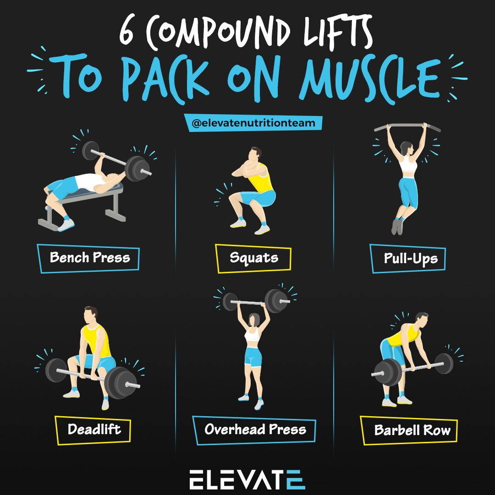

There are three main types of exercises. Compound, Isometric, and Cardiovascular. Exercise is something anyone can do immediately. It doesn't matter if you like lifting weights, yoga, or running. There are benefits to them all. Not sure where to start? The Mayo Clinic has a great page to help you get started.
There are plenty of benefits to regular exercise. The Centers for Disease Control and Prevention lists plenty of information about physical activity here. Some benfits include:
| Compound Lifts | Isometric Exercises | Cardiovascular Exercises |
|---|---|---|
| Helps to build muscle and strength | Helps to increase stablization and maintain strength | Helps to increase heart health and endurance |
| Examples include: Barbell Squat, Bench Press, and Deadlift | Examples include: Stretches, Yoga, and Wall Sits | Examples include: Jump Rope, Jogging, and Climbing (stairs, rocks, or hills) |
